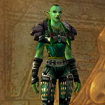
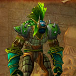
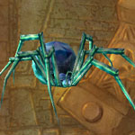
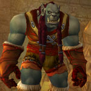
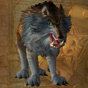
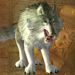
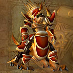

You can find the Lower Blackrock Spire dungeon entrance within Blackrock Mountain, Eastern Kingdoms.
The coordinates are (20.8,38.6)
Click for Dungeon Entrance:

You can enter Blackrock Mountain from two entrances, find them in Burning Steppes or Searing Gorge (Eastern Kingdoms).

You can find the entrance to the dungeon two ways, follow round and enter the large doorway and head up the stairs.

You can also fly into the hole in wall or run up the chain being held by the stone dwarf and jump across.

Inside you will find the portal underneath the steps.
Route:
Map 1Map 2Map 3Map 4Map 5Map 6Map 7Map 8Map 9

To fight boss Urok Doomhowl (boss 5) you need two items to summon him. First item drops from Highlord Omokk (boss 1). Loot ‘Omokk’s Head’.
Second item is looted from a wall. Loot a ‘Roughshod Pike’, they can be found hanging on the wall next to some sleeping orcs.


If you have the 2 items to summon boss Urok Doomhowl stand inside Urok’s Tribute Pile & click the head to combine items. You have now challenegd Urok, fight the waves of adds until boss appears.


Bosses:
1. Highlord Omokk2. Shadow Hunter Vosh'gajin3. War Master Voone4. Mother Smolderweb5. Urok Doomhowl (optional boss)6. Quartermaster Zigris7. Halycon8. Gizrul the Slavener9. Overlord Wyrmthalak
Quick Boss Tactics:
/i Damages current target, knocks them away. At 50% health bosses attack speed increases by 60%.
/i Damages current target, knocks them away. At 50% health bosses attack speed increases by 60%.

Quick Boss Tactics:/i Interrupt Curse of Blood. Turns a random player into a frog for 8 sec.

Quick Boss Tactics:/i Inflicts physical damage to players. During fight has different physical damage attacks that stun & knock back players.

Quick Boss Tactics:/i Stuns all players in front of her for 4 sec. Mother’s Milk poisons a random player (stand away from others to prevent spreading). Baby spiders are released when boss dies.
Quick Boss Tactics:
/i Kill waves of ogres until boss spawns. Inflicts physical damage to current target. Roars causing all nearby players to flee for 8 sec.
/i Kill waves of ogres until boss spawns. Inflicts physical damage to current target. Roars causing all nearby players to flee for 8 sec.

Quick Boss Tactics:/i Nets a random player for 3 sec, inflicts physical damage. Throws a Stun Bomb at a random player, inflicts fire damage to all nearby & stuns.

Quick Boss Tactics:/i Deals physical damage to current target, focus heal tank. When you kill Halycon, Gizrul will come running to join fight.

Quick Boss Tactics:/i All attacks are on current target, focus heal tank. Bites his current target healing himself for double amount drained. Infected Bite inflicts nature damage & increases physical damage taken.

Quick Boss Tactics:/i Deals physical damage to players. Demoralizing Shout reduces melee attack power of all nearby. At 50% calls for some guards to assist him.